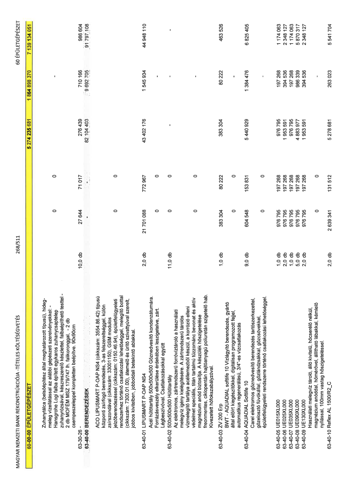

| Tétel | Menny. | Egys. | Anyag e.ár (net HUF) | Díj e.ár (net HUF) | Anyag összesen (net HUF) | Díj összesen (net HUF) | Anyag+Díj összesen (net HUF) |
|---|---|---|---|---|---|---|---|
| 60-00-00 ÉPÜLETGÉPÉSZET | NaN | NaN | 0 | 0 | 5 274 235 681 | 1 864 898 370 | 7 139 134 051 |
| Zuhanytálca (belsőépítész által meghatározott típusú), hideg-meleg vízellátással az alábbi gépészeti szerelvényekkel: - Hansgrohe Logi falba épített egykaros zuhanycsaptelep zuhanyrózsával, készreszerelő készlettel, falbaépíthető testtel - 2 db MOFÉM MSZ 179/747 lh. falikoronggal, - 2 db csempeszeleppel kompletten beépítve. 90x90cm | 0 | 0 | 0 | 0 | 0 | 0 | 0 |
| 63-30-26 - | 10,0 | db | 27 644 | 71 017 | 276 439 | 710 166 | 986 604 |
| 63-40-00 BERENDEZÉSEK | NaN | NaN | 0 | 0 | 82 104 403 | 9 692 705 | 91 797 108 |
| ACO LIPUSMART P-OAP NS4 (cikkszám: 3554.86.42) típusú központi zsírfogó berendezés, 3-as felszereltséggel, külön zsírszondával (cikkszám: 33001150), GSM modulos jelzőberendezéssel (cikkszám: 0150.46.94), épületfelügyeleti rendszerhez történő csatlakozási lehetőséggel, melegítő bottal (cikkszám: 7300.01.00), átemelő és ürítő szivattyúval szerelt, jobbos kivitelben, jobboldali betekintő ablakkal. | 0 | 0 | 0 | 0 | 0 | 0 | 0 |
| 63-40-01 LIPUSMART P-OAP NS4 | 2,0 | db | 21 701 088 | 772 967 | 43 402 176 | 1 545 934 | 44 948 110 |
| Acél hűtőtartály 500x500x500 Gőznedvesítő kondenzátumára. Forrázásveszély elkerülése érdekében leszigetelve, zárt. Légbeszívóval. Csatlakozásokkal együtt | 0 | 0 | 0 | 0 | 0 | 0 | 0 |
| 63-40-02 500x500x500 Hűtőtartály | 11,0 | db | 0 | 0 | 0 | 0 | 0 |
| Az elektromos, zártrendszerű forróvíztároló a használati melegvíz igény kielégítésére. A zártrendszerű tárolós vízmelegítő tartálya acéllemezből készül, a korrózió elleni védelmet speciális, titán tartalmú tűzzománc bevonat és aktív magnézium anód biztosítja. A készülék hőszigetelése freonmentes, ciklopentán hajtóanyagú poliuretán szigetelő hab. Kivezetett hőfokszabályzóval. | 0 | 0 | 0 | 0 | 0 | 0 | 0 |
| 63-40-03 ZV 200 Erp | 1,0 | db | 383 304 | 80 222 | 383 304 | 80 222 | 463 526 |
| BWT - AQUADIAL softlife 10 Vízlágyító berendezés, gyártó által előírt kiegészítőkkel, digitálisan programozott fejjel, automatikus regenerálású, 3/4”-es vízcsatlakozás | 0 | 0 | 0 | 0 | 0 | 0 | 0 |
| 63-40-04 AQUADIAL Softlife 10 | 9,0 | db | 604 548 | 153 831 | 5 440 929 | 1 384 476 | 6 825 405 |
| Carel elektromos gőznedvesítő berendezés tartószerkezettel, gőzelosztó fúvókállal, gőzlándzsákkal, gőzcsövekkel, épületfelügyeleti rendszerre történő csatlakozási lehetőséggel. | 0 | 0 | 0 | 0 | 0 | 0 | 0 |
| 63-40-05 UE015XL000 | 1,0 | db | 976 795 | 197 268 | 976 795 | 197 268 | 1 174 063 |
| 63-40-06 UE025XL000 | 2,0 | db | 976 795 | 197 268 | 1 953 591 | 394 536 | 2 348 127 |
| 63-40-07 UE035XL000 | 1,0 | db | 976 795 | 197 268 | 976 795 | 197 268 | 1 174 063 |
| 63-40-08 UE090XL000 | 5,0 | db | 976 795 | 197 268 | 4 883 977 | 986 339 | 5 870 317 |
| 63-40-09 UE130XL000 | 2,0 | db | 976 795 | 197 268 | 1 953 591 | 394 536 | 2 348 127 |
| Használati melegvíz tároló, álló kivitelű, hőcserélő nélkül, magnézium anóddal, hőmérővel, állítható lábakkal, kémlelő nyílással, 100mm vastag hőszigeteléssel. | 0 | 0 | 0 | 0 | 0 | 0 | 0 |
| 63-40-10 Reflex AL 1500/R2_C | 2,0 | db | 2 639 341 | 131 512 | 5 278 681 | 263 023 | 5 541 704 |
